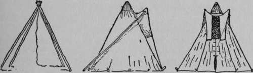

X. Campercraft Or The Summer Camp
Description
This section is from the book "The Book Of Woodcraft", by Ernest Thompson Seton. Also available from Amazon: The Book of Woodcraft.
X. Campercraft Or The Summer Camp
Camping Out
EVERY boy looks forward to camping out. Then it is that he gets the best chance to practise the things that are peculiar to scouting; and camping out is the only complete outdoor life.
When a boy, I was of course eager for a chance to camp out, but I had a very wrong idea about it. I believed that one must undergo all sorts of hardships, in order to be really "doing it"; such as, sleep on the ground with one blanket, go without proper food, etc. I know some boys that were injured for life by such practices.
It is well, then, to keep in mind that camping out offers a number of priceless benefits, and is also beset by one or two dangers. Let us aim to get all the good and avoid all the ill.
The good things are: The pure air, especially at night; the bracing and lung-healing power of the woods; the sun bath; the tonic exercise; and the nerve rest.
The bad things are: The danger of rheumatism from sleeping on the ground, or in damp clothes; the exhaustion from bad nights, through insufficient bed-clothes or an uncomfortable bed; and the dangers arising from irregular meals and badly cooked food.
I have seen boys go back from an ill-run camp, tired out and but little benefitted; whereas, if properly guided, every camp-out should mean a new spell of life - a fresh start in vigor for every one concerned.
Many mothers ask with fear, "Won't my boy catch cold, if he camps out?" This is the last and least of dangers. Almost never does one catch cold in camp. I have found it much more likely that boys suffer through irregular hours of eating and sleeping; but these are troubles that the camp discipline is designed to meet.
The great evil that campers should beware of, is of course rheumatism. But none need suffer if they will take the simple precaution of changing their wet clothes when not in action, and never sleeping directly on the ground. A warm, dry place for the bed should be prepared in every tent and teepee.
As a rule, it is better to go on a trip with a definite object. If you go with a general vague determination to get healthy, you are likely to think too much about it. It is better to live correctly, and safely assume that you will be healthier for the trip. To illustrate: One of my trips was made to determine the existence of Wood Buffalo on the Great Slave River; another to prove that the Canadian Fauna reached the Lake of the Woods. Some of my friends have made trips to win the badge of expert canoe-man; others for the camper badge, and so forth, and I think it best to go a long way from home. Get as complete a change as possible.
Outfit For A Party Of Six (Camping One Week In Fixed Camp)
1 12-foot teepee (if for cold weather), accommodating five or six men not forgetting a storm-cap, >Or, in summer, a 10 x 12 wall tent.
18 x 10 awning for kitchen and dining-room, in hot or wet weather.
5 yards mosquito-bar and some dope for stinging-insects. 3 or 4 one-gallon bags of cotton for supplies. A few medicines and pill-kit or "first aid," including cold cream for sunburn.
1 strong clothes fine; ball of cord; ball twine; of ball of strong linen pack-thread.
Axe.
A sharp hatchet.
Claw-hammer.
Whetstone.
Small crosscut saw.
Spade.
File.
Packing needles and sewing-kit for repairing clothes. Nails: One lb. of if, two lbs. of 2 1/2, two lbs. of 3 1/2, and one lb. of 5-inch.
Pocket tool outfit (A, K, and B is good)
Soap.
Mirror.
Toilet-paper.
Waterproof match-box.
book of Woodcraft.
A locker.
Cooking outfit: Either a ready-made, self-nesting "Buzzacot," or:
3 cover-kettles, 10-qt., 4-qt., and 2-qt. (riveted, not soldered).
2 frying-pans, with handles and covers. 2 big spoons.
Coffee strainer. 1 Dutch oven.
1 wire grill.
2 bake-pans.
1 butcher knife.
Salt and pepper casters.
Tin boxes to hold stock of same.
2 folding buckets.
2 folding wash-basins.
Dishpan.
Tea-pot (riveted). Coffee-pot (riveted). Dishcloths and towels. Soap.
Folding lantern and supply of candles.
4 flat steel rods to cook on.
And for each man, plate, cup, saucer, and porringer (preferably enameled); also knife, fork, and spoon.
And such other things as are dictated by previous experience, or for use in the games to be played.
Besides which each member has his ordinary clothes, with a change, and toilet-bag, also:
A rubber blanket.
2 wool blankets.
1 cotton or burlap bed-tick, 2 1/2 x 6 1/4 ft.
5 wimming-trunks.
A pair of brown sneaks. A war-sack of waterproof. Khaki suit.
Fishing tackle and guns, according to choice. Pocket knife.
Food to last six fellows one week:
Oatmeal....... 6 lbs.
Rice........ 2 lbs.
Crackers....... 10 lbs.
Cocoa....... 3 lb.
Fresh fish and game are pleasant variations, but seem to make little difference in the grocery bill.
Outfit For Each Brave
1 good 5-foot lancewood bow, complete with string. 6 standard arrows, 25 in. long, 3 feathers, steel points. 1 quiver of waterproof canvas or leather. 1 arm-guard. 1 head-band.
1 pair moccasins or "sneaks".
1 waterproof blanket.
2 Indian blankets of gray wool.
Tea........ 1/2 lb.
Coffee....... 3 lbs.
Lard........ 5 lbs.
Sugar........ 6 lbs.
Condensed milk..... 12 tins.
Butter....... 7 lbs.
Eggs........ 3 dozen.
Bacon....... 15 lbs.
Preserves...... 5 lbs.
Prunes....... 3 lbs.
Maple syrup...... 3 quarts.
Cheese....... 1 lb.
Raisins....... 3 lbs.
Potatoes....... 1/2 bushel.
white beans...... 3 quarts.
Canned corn...... 3 tins.
Flour ....... 25 lbs.
Baking-powder..... 1 lb.
Concentrated soups ... 1/2 lb.
Salt........ 2 lbs.
Pepper....... 1 ounce.
Tents
There are many styles of small tents on the market; almost any of them answer very well. For those who wish to equip themselves with the latest and best, a 10 x 12-foot wall tent of 10-ounce double-filled army duck, stained or dyed yellow, brown, or dull green, is best. It will accommodate a party of five or six.
For tramping trips, light tents of waterproof silk are made. One large enough for a man weighs only two or three pounds.
Any of the established makers can supply what is needed if they know the size of the party and nature of the outing.
The Indian teepee has the great advantage of ventilation and an open fire inside. It has the disadvantage of needing a lot of poles and of admitting some rain by the smoke-hole. (It is fully described on page 444).
A new style of teepee, invented by myself some years ago, has been quite successful, since it combines the advantage of teepee and tent and needs only four poles besides the smoke-poles. It is, however, less picturesque than the old style.
This gives the great advantage of an open fire inside, and good ventilation, while it is quite rainproof.
Teepees
It can be put up with four long poles outside the canvas, the holes crossing at the top as in the Indian teepee. Of course the point of the cover is attached before the poles are raised.
It may be got from D. T. Abercrombie & Co., 311 Broadway, New York.
The Camp Ground
In selecting a good camp ground, the first thing is a dry, level place near good wood and good water. If you have horses or oxen, you must also have grass.
Almost all Indian camps face the east, and, when ideal, have some storm-break or shelter on the west and north. Then they get the morning sun and the afternoon shade in summer, and in winter avoid the coldest winds and drifting snows, which in most of the country east of the Rockies come from the north and west.
Sometimes local conditions make a different exposure desirable, but not often. For obvious reasons, it is well to be near one's boat-landing.
After pitching the tent or teepee, dig a trench around, with a drain on the low side to prevent flooding.
Latrine
Each small camp or group of tents in a large camp, must have a latrine, that is a sanitary ditch or hole. For a small camp or short use, this is a narrow trench a foot wide, surrounded by a screen of bushes or canvas. It is made narrow enough to straddle. Each time after use, a shovelful of dry earth is thrown in.
But a large camp needs the regulation army latrine. This is a row of seats with lids over a long trench which has a layer of quicklime in the bottom. The wooden structure is banked up so no flies can get in. The lids are down tight when the seat is not in use. A shovelful of quicklime is then thrown in after each occasion. A running trough its arranged along side so it is tributary to the main trench; this also is kept coated with quicklime. The place should be thoroughly screened, but is as well without a roof except over the seats.
All camps should be left as clear of filth, scraps, papers, tins, bottles, etc., as though a human being had never been there.
Continue to:
Tags
bookdome.com, books, online, free, old, antique, new, read, browse, download